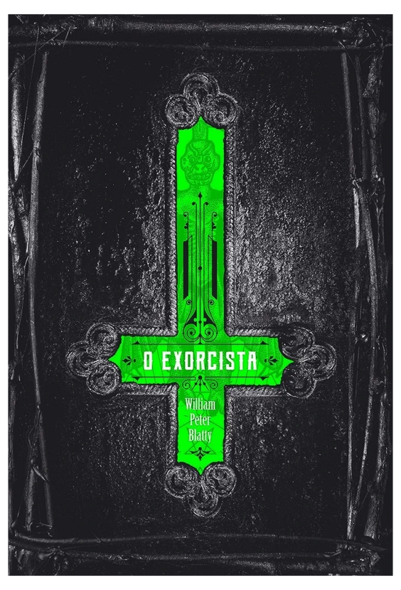

O exorcista - Willian Peter Blatty
Sinopse
Quatro décadas após chocar o mundo inteiro, O exorcista permanece uma metáfora moderna do combate entre o sagrado e o profano, em um dos romances mais macabros já escritos.
Inspirado no caso real do exorcismo de um adolescente, o escritor William Peter Blatty publicou em 1971 a perturbadora história de Chris MacNeil, uma atriz que sofre com inesperadas mudanças no comportamento da filha de 11 anos, Regan. Quando todos os esforços da ciência para descobrir o que há de errado com a menina falham e uma personalidade demoníaca parece vir à tona, Chris busca a ajuda da Igreja para tentar livrar a filha do que parece ser um raro caso de possessão. Cabe a Damien Karras, um padre da Universidade de Georgetown, salvar a alma de Regan.
Neste livro, Blatty conseguiu dar ao demônio a sua face mais revoltante: a corrupção de uma alma inocente. Um clássico incomparável do terror, O exorcista não se trata apenas de uma simples história sobre o bem contra o mal, ou sobre Deus contra o Demônio, mas também sobre a renovação da fé.